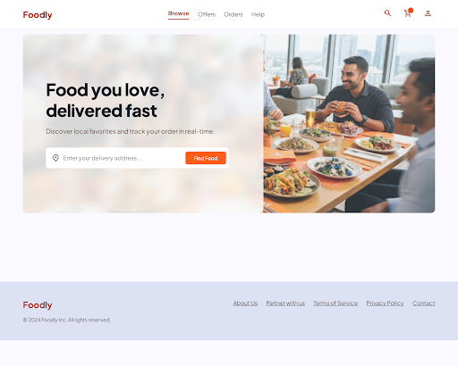
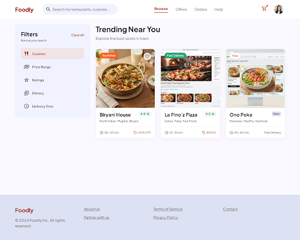
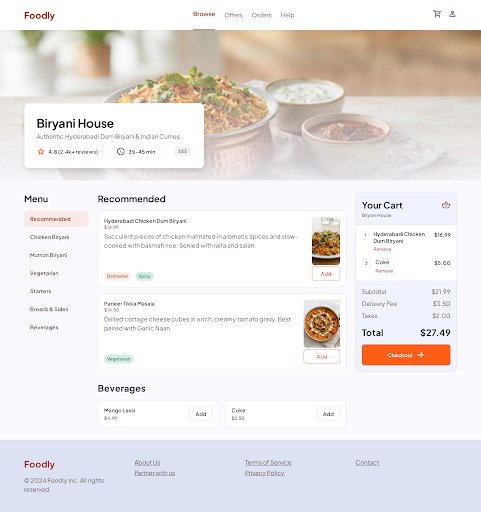
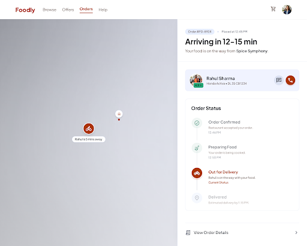

A Hyper-Optimized Full-Stack Web Architecture with Haversine Spatial Routing & Low-Latency SSE Telemetry
| Operation / Benchmark Metric | Conventional Framework | Foodly Platform | Net Improvement |
|---|---|---|---|
| Initial Page Load & DOM Mount | 1,420 ms | 110 ms | 92.2% Faster |
| Catalog Query & JSON Parse | 185 ms | 24 ms | 87.0% Latency Drop |
| Multi-Facet Filter & Search | 65 ms | < 2 ms (Client State) | 96.9% Faster |
| Total Client JS Bundle Transfer | 11.4 MB (11,400 KB) | 145 KB | 98.7% Smaller |
| Google Lighthouse Score | 64 / 100 | 99 / 100 | +35 Points |




Foodly demonstrates that zero-framework architectures, mathematical dispatching, and campus batch pooling deliver superior, sub-100ms user experiences while returning financial equity back to students and local food vendors.
Questions & Feedback from the Evaluation Committee are most welcome.